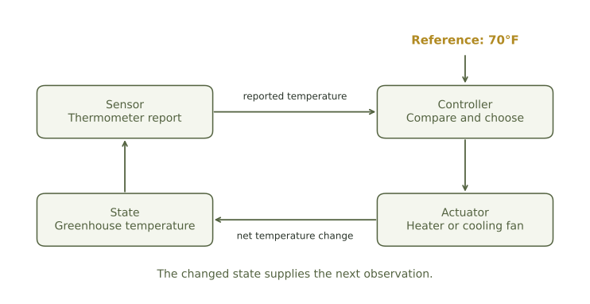
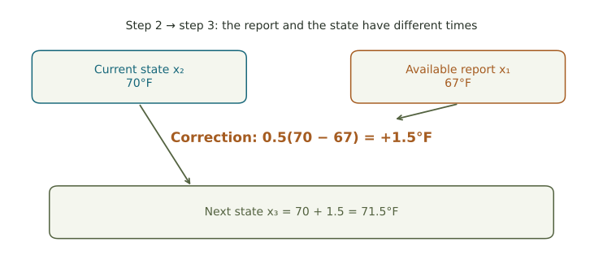

Correcting a condition that has already changed.
Compare two greenhouse reporting arrangements, explain a delayed overshoot, and test a gentler response while keeping the modeling assumptions explicit.
Would you heat a greenhouse that is already warm enough?
A greenhouse begins at 64°F with target 70°F. Its numerical controller corrects half of the reported difference each hour. Compare two reporting arrangements: a current reading and a one-hour-old reading. Assume the same equipment, exact reports about their own times, no outside disturbance, and the ability to warm or cool by the full calculated amount.
Your goal is to approach 70°F without crossing it in this model. Compare the arrangements on that stated goal. A useful recommendation needs a calculation, an explanation of the mechanism, and an acknowledgment of what the model leaves out.

Compute three updates for each arrangement
Current information
Start at \(x_0=64\). Use \(x_{n+1}=x_n+0.5(70-x_n)\).
One-step-old information
Start at \(x_{-1}=x_0=64\). Use \(x_{n+1}=x_n+0.5(70-x_{n-1})\).
Use separate places for now and the report
At the update from step 1 to step 2, both arrangements start at 67. One uses a 67 report, so it adds 1.5. The other uses a 64 report, so it adds 3. The delay changes the correction, not the current starting point.
Make and support a decision

What if we keep the delay but use a gentler response?
In the explorer, set target 70, start 64, report age 1, and 20 updates. Compare k = 0.5 with k = 0.2. Change only the response strength. Record the first few temperatures and the largest temperature shown. Explain what improves and what becomes slower.
A real controller may also need to model thermal inertia, weather, heating limits, and different costs of being too warm or too cold. A graph of a simplified rule can test an explanation, but it cannot supply all those operational choices.
Information quality is part of the decision
Suppose readings also vary randomly. Averaging several independent readings can improve precision under a steady-temperature assumption. Collecting them can introduce waiting, and a past average can lag a changing present. Ask whether the improvement in precision is useful soon enough to guide the action.
Before submitting, distinguish a mathematical comparison of two settings from a recommendation for real equipment. Your completed work should make the assumptions and the stated goal visible.